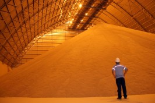
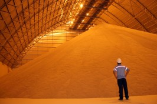

Onde a geometria espacial é utilizada?
Tecnologia Industrial
Os utensílios de plástico que utilizamos em nossas vidas diárias, são fabricados a partir de moldes. A geometria espacial é útil para determinar a quantidade de plástico necessária para preencher qualquer molde. Se calculada com precisão a quantidade de plástico necessária para fazer certa peça, pode-se encher o molde completamente, sem sobras e manter o custo de produção o mais baixo possível.


Comércio
Praticamente tudo o que usamos chega dentro de algum tipo de embalagem. Todo artigo em três dimensões, deve ser embalado de forma eficaz e econômica. O material de embalagem, tal como o papelão, custa dinheiro. Perde-se dinheiro, quando se usa mais material de embalagem do que o necessários. A geometria espacial ajuda a resolver esse tipo de problema.

Agricultura
A agricultura e negócios relacionados, usam a geometria espacial para determinar o volume (capacidade) de silos ou depósitos de armazenamento – para grãos, feno, palha, etc. Quando chega o tempo de colheita, devem conhecer a capacidade de armazenamento de silos e celeiros, além da capacidade de carga de caminhões e vagões dos trens. Quando chega o tempo de semear, o volume ou peso da semente disponível se relaciona com a área a ser semeada.
 

Fonte: Verona, V. A e Lopes, M.R.M. Aplicação da Geometria Espacial em Ambientes Diversos.